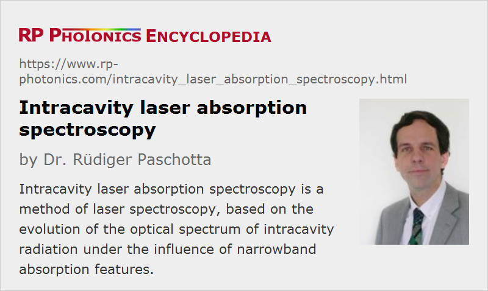

Intracavity Laser Absorption Spectroscopy
Acronym: ICLAS or ICAS
Definition: a method of laser spectroscopy, based on the evolution of the optical spectrum of intracavity radiation under the influence of narrowband absorption features
More general term: laser absorption spectroscopy
German: Intracavity-Laserabsorptionsspektroskopie
How to cite the article; suggest additional literature
Author: Dr. Rüdiger Paschotta
Intracavity laser absorption spectroscopy is a special laser spectroscopy technique for highly sensitive spectroscopic measurements. The basic principle is as follows. The substance to be evaluated (e.g. some gas sample) is placed within the resonator of a laser, which is preferably based on a gain medium with broad gain bandwidth and a resonator with low losses. When the laser is turned on, it starts to oscillate on many resonator modes simultaneously; only after many resonator round trips will the optical spectrum of the generated light strongly concentrate to the spectral region with highest gain. During this evolution, weak absorption features of the tested sample can imprint signatures on the spectrum, because they can influence the spectrum during many round trips. A measurement of the spectrum is done some time after switching on the laser; this time should be long enough to allow for strong spectral features to develop, but also short enough to prevent too strong narrowing of the spectrum caused by the finite gain bandwidth.
With a carefully optimized setup, intracavity absorption spectroscopy allows for extremely long effective path lengths of tens of thousands of kilometers, and at the same time very high spectral resolution. Suitable laser gain media for the spectroscopy of gases include neodymium-doped fibers and bulk glasses, titanium-doped sapphire, laser dyes, color center crystals, laser diodes, and vertical external cavity surface-emitting lasers. Important issues are to have a broad gain bandwidth, to minimize resonator losses, and to avoid any parasitic reflections within the laser resonator. A review paper [6] explains in detail many technical issues and variations of the basic technique.
Questions and Comments from Users
Here you can submit questions and comments. As far as they get accepted by the author, they will appear above this paragraph together with the author’s answer. The author will decide on acceptance based on certain criteria. Essentially, the issue must be of sufficiently broad interest.
Please do not enter personal data here; we would otherwise delete it soon. (See also our privacy declaration.) If you wish to receive personal feedback or consultancy from the author, please contact him e.g. via e-mail.
By submitting the information, you give your consent to the potential publication of your inputs on our website according to our rules. (If you later retract your consent, we will delete those inputs.) As your inputs are first reviewed by the author, they may be published with some delay.
Bibliography
| [1] | L. A. Pakhomycheva et al., “Line structure of generation spectra of lasers with inhomogeneous broadening of the amplification line”, JETP Lett. 12, 43 (1970) |
| [2] | H. J. Kimble, “Calculated enhancement for intracavity spectroscopy with single-mode laser”, IEEE J. Quantum Electron. 16 (4), 455 (1980), doi:10.1109/JQE.1980.1070507 |
| [3] | R. Bohm et al., “Intracavity absorption spectroscopy with Nd3+-doped fiber laser”, Opt. Lett. 18 (22), 1955 (1993), doi:10.1364/OL.18.001955 |
| [4] | K. J. Boller and T. Schroeder, “Demonstration of broadband intracavity spectroscopy in a pulsed optical parametric oscillator of beta-barium borate”, J. Opt. Soc. Am. B 10 (9), 1778 (1993), doi:10.1364/JOSAB.10.001778 |
| [5] | A. Kachanov et al., “Intracavity laser spectroscopy with vibronic solid-state lasers: I. Spectro-temporal transient behaviour of a Ti:sapphire laser”, J. Opt. Soc. Am. B 11 (12), 2412 (1994), doi:10.1364/JOSAB.11.002412 |
| [6] | V. M. Baev, “Laser intracavity absorption spectroscopy”, Appl. Phys. B 69, 171 (1999), doi:10.1007/s003400050793 |
| [7] | A. Garnache et al., “High-sensitivity intracavity laser absorption spectroscopy with vertical-external-cavity surface-emitting semiconductor lasers”, Opt. Lett. 24 (12), 826 (1999), doi:10.1364/OL.24.000826 |
| [8] | J. Cheng et al., “Infrared intracavity laser absorption spectroscopy with a continuous-scan Fourier-transform interferometer”, Appl. Opt. 39 (13), 2221 (2000), doi:10.1364/AO.39.002221 |
See also: laser absorption spectroscopy, laser spectroscopy, lasers, laser resonators, gain bandwidth
and other articles in the categories lasers, methods
|  |
If you like this page, please share the link with your friends and colleagues, e.g. via social media:
These sharing buttons are implemented in a privacy-friendly way!